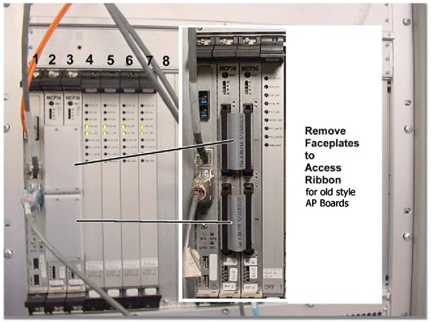
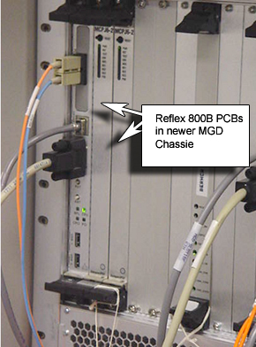

Operating Documentation
Direction 5440001-3, Rev# 6
Signa HDxt Service Methods
Module Version 1.0, Version Date 5/3/07
Operating Documentation |
| Required Persons | Preliminary Reqs | Procedure | Finalization |
|---|---|---|---|
| 1 | Not Applicable | Not Applicable | Not Applicable |
The MGD Chassis (see Illustration 1 and Illustration 2) houses the circuit boards for the pulse generation and image acquisition subsystems. These boards can be easily accessed from the front and back of the cabinet. The following removal and insertion procedures are applicable for all the types of circuit boards located within the cardrack. The following topics are found in this section:
| Last Update | 05/12/2006 |
| NOTE: | Refer to proper Power Down Procedure. |
POWER-DOWN:
Refer to the Power-Down procedure for the steps required to remove power from the Systems Cabinet.
Refer to Illustration 1, Illustration 2 and their accompanying tables for circuit board parts identification.
Illustration 1: MGD CHASSIS - FRONT VIEW

| Slot(s) Number | Board Name | Illustration |
|---|---|---|
| 1 | APS (Acquisition Processing Subsystem) | Illustration 1 |
| 2/3 | AP (Array Processor) | Illustration 1 |
| 4-7 | DRFI (Digital Receive Filter 1) | Illustration 1 |
| 10 | AGP (Application Gateway Processor) | Illustration 1 |
| 11 | IRF (Interface and Remote Functions) | Illustration 1 |
| 12 | SCP (Scan Control Processor) | Illustration 1 |
| 13/14 | SRF/TRF (Sequence Related Functions/ Trigger and Rotational Functions) | Illustration 1 |
| PS1, PS2 | Power Supply Modules | Illustration 1 |
Illustration 2: MGD CHASSIS - REAR VIEW

| Slot(s) Number | Board Name | Illustration |
|---|---|---|
| 8 | Bridge Board | Illustration 2 |
| 11 | IRF I/O (Interface and Remote Functions Input/Output) | Illustration 2 |
| 13/14 | STIF (SRF/TRF Interface) | Illustration 2 |
| AC Input Module | Illustration 2 |
Circuit Board Removal/Replacement Procedure
Attach a grounding wrist strap.
Where applicable, remove the fiber-optic cables (PCI Card, 10/100 BaseT, Com1, etc.) from the face of the board.
| NOTE: | There are two possible configurations of AP boards. Early sites will have ribbon cables in the front of the chassis. Newer styles will have PIM's, or connectors in the rear of the chassis. |
| NOTE: | When removing the AP boards (slot 2 and 3 on the front of the Cabinet), you must also remove the blank faceplate in order to gain access to the ribbon cables (see Illustration 3). |
Illustration 3: RIBBON CABLE ACCESS

Illustration 4: Rear of MGD

Loosen the two faceplate holding screws (one located at the top and bottom of the faceplate). These screws are captive to the faceplate, and do not need to be completely removed.
The new type boards in the MGD cabinet are as shown below in illustration 5. Illustration 5: MGD Cabinet new type – front view
Illustration 5: Reflex 800B PCBs in the new MGD

Using your thumbs, push in the grey release tabs (Illustration 6), and gently pull the extractor tabs located on the top and bottom of the circuit board. Refer to Illustration 7 for the proper direction. (Note, however, that the APS, AP, AGP, SCP, and Bridge boards do NOT have release tabs.) The lever action of the ejectors will disengage the circuit board connections from the chassis.
Illustration 6: FACEPLATE RELEASE TABS

Slide the circuit board all the way out of the card cage, being careful not to bend or bind the card in any way.
| NOTE: | The circuit board should be handled using only the faceplate, ejectors, and the edges of the board. |
Place the card in an appropriate shipping package, or discard, if applicable.
Reverse The Process For Installation
Gently engage the circuit board connectors with the backplane. If it doesn’t feel like the circuit board is properly engaging the backplane, remove the board and check the connectors for bent or broken pins.
Once the board ejectors contact the MGD chassis faceplate, gently push the ejectors in to the center of the board. This action will cause the ejectors to insert the board into the chassis. Do not attempt to use anything other than the ejectors to insert or remove the board from the chassis.
| NOTE: | Possible equipment damage! Extreme caution should be exercised when removing and replacing circuit boards. All boards (which have female connectors - See Illustration 8) must be carefully disengaged, and then re-engaged to the male pins located on the backplane chassis. If any of the pins are damaged, the entire chassis will need to be replaced. |
Tighten the faceplate holding screws to secure the circuit board to the cardrack.
| NOTE: | Do not over-tighten these screws. |
Where applicable, re-attach the cables to the face of the board.
| NOTE: | While the two ribbon cables interconnecting the two AP Boards in a Reflex 400 AP configuration are interchangeable, they are keyed and should only be installed in one direction. Install these so that the triangle markings on the ribbon cable connectors match with those on the AP Board connectors. Use care to ensure the triangle markings match as it is possible, with some extra effort, to force these on the AP Boards upside down. |
Illustration 7: FACEPLATE EJECTOR ACTION

Illustration 8: BOARD CONNECTIONS

Refer to the Power-Up procedure for the steps required to restore power to the Systems Cabinet.
Refer to Finalization, Step 1 for checkout and proper operation.
Refer to the Power-Down procedure for the steps required to remove power from the Systems Cabinet.
Power Supply Module Removal/Replacement Procedure
Attach a grounding wrist strap.
Loosen the 4 faceplate holding screws (two located at the top and bottom of the faceplate - see Illustration 9). These screws are captive to the faceplate and do not need to be completely removed.
Illustration 9: POWER SUPPLY FACEPLATE HOLDING SCREWS

Using your thumbs, push in and then gently pull the extractor tabs located on the top and bottom of the circuit board (refer to Illustration 7 for proper direction). The lever action of the ejectors will disengage the supply module connections from the chassis.
Slide the power supply module all the way out of the card cage.
| NOTE: | The modules should be handled using only the faceplate, ejectors, and the edges of the module. |
Place the module in an appropriate shipping package.
REVERSE THE PROCESS FOR INSTALLATION
Remove the packing material from the replacement module, and gently slide the module into the chassis.
| NOTE: | Possible equipment damage! Extreme caution should be exercised when removing and replacing circuit boards and power modules. All boards and modules (which have female connectors - see Illustration 8) must be carefully disengaged, and then re-engaged to the male pins located on the backplane chassis. If any of the pins are damaged, the entire chassis will need to be replaced. |
Use the ejectors to insert the board into the chassis.
Tighten the faceplate holding screws to secure the power supply module to the cardrack.
| NOTE: | Do not over-tighten these screws |
Refer to the Power-Up procedure for the steps required to restore power to the Systems Cabinet.
Refer to Finalization, Step 1 for final check out steps.
Turn off MGD Chassis (see Illustration 10).
Illustration 10: Rear MGD Chassis, Power Switch

On the front of the MGD Chassis, remove the 10 screws that secure the Chassis Fan Cover (see Illustration 11).
Illustration 11: MGD Chassis Fan Cover

Pull out the defected fan(s).
Illustration 12: Pulling Out the Defect Fan

| NOTE: | The fan is plug and play with no cables. You can pull it out or push it in with ease. |
Slide new fan (part number 2294300-7into same slot the defective fan was removed from.
| NOTE: | The fan's connector should automatically align itself to the chassis's plug. Push the fan back until it is snug. |
Reattach the Chassis Fan Cover (see Illustration 11).
Turn on MGD Chassis (see Illustration 10).
Refer to the Power-Down procedure for the steps required to remove power from the Systems Cabinet.
MGD CHASSIS REMOVAL/REPLACEMENT PROCEDURE
| NOTE: | The MGD chassis weighs about 35 lbs. (17.7 kg) when empty. |
Attach a grounding wrist strap.
Remove all boards and store them in a static-safe location. See Circuit Board Removal/Replacement, Step 2 for removal instructions.
Remove the Power Supply Modules. See Power Supply Module Removal/Replacement for removal instructions.
Remove the six screws that hold the MGD Chassis to the cabinet frame.
Slide the MGD Chassis out of the Systems Cabinet.
REVERSE THE PROCESS FOR INSTALLATION
Attach a grounding wrist strap.
Slide the MGD Chassis into the Systems Cabinet.
Install the six screws that hold the MGD Chassis to the cabinet frame.
Install all boards. See Circuit Board Removal/Replacement, Step 2 for installation instructions.
Replace Power Supply Modules. See Power Supply Module Removal/Replacement for installation instructions.
POWER-UP
Refer to the Power-Up procedure for the steps required to restore power to the Systems Cabinet.
Reset TPS to insure the system will download.
Run Quick Diags (15 minutes) to verify operations.
Run one head or body scan.